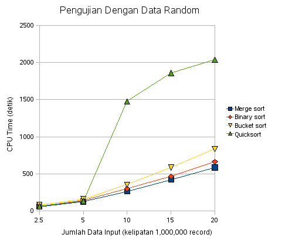
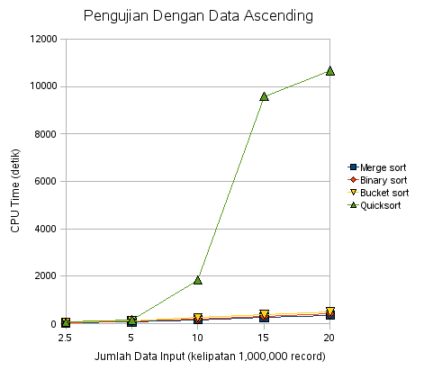
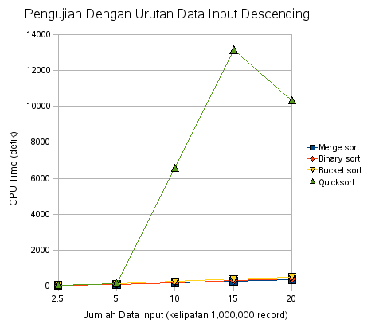

(and Blogger table Sucks!)
Analysis of Sorting Algorithm for Large Data
Comparing several sorting algorithm to measure the most efficient algorithm (in processing time and and speed) for sorting large data, data where their size is larger than system memory.
Sorting algorithms that I use in this analysis:
Test Machine :
Some Notes:
+-----------------------------------------------------+
| Size of Input Data (* 1,000,000 of record) |
+------------------+-----------------------------------------------------+
| Sort Algorithm | 2.5 | 5 | 10 | 15 | 20 |
+-------+------------------+----------+---------+----------+----------+----------+
| | Merge sort | 59.37 | 126.16 | 265.05 | 421.84 | 586.44 |
| Times | Binary sort | 66.58 | 145.03 | 299.72 | 464.23 | 662.62 |
| (sec.)| Bucket sort | 77.98 | 159.7 | 353.45 | 586.06 | 835.25 |
| | Quick sort | 63.31 | 133.99 | 1475.81 | 1858,22 | 2036.56 |
+-------+------------------+----------+---------+----------+----------+----------+

+-----------------------------------------------------+
| Size of Input Data (* per 1,000,000 of record) |
+------------------+-----------------------------------------------------+
| Sort Algorithm | 2.5 | 5 | 10 | 15 | 20 |
+-------+------------------+----------+---------+----------+----------+----------+
| | Merge sort | 43.88 | 86.62 | 175.64 | 263.99 | 355.99 |
| Times | Binary sort | 50.48 | 100.53 | 203.17 | 308.55 | 408.77 |
| (sec.)| Bucket sort | 64.69 | 129.63 | 256.31 | 390.55 | 501.11 |
| | Quick sort | 67.83 | 149.57 | 1839.96 | 9582.04 | 10667.31 |
+-------+------------------+----------+---------+----------+----------+----------+

+-----------------------------------------------------+
| Size of Input Data (* 1,000,000 of record) |
+------------------+-----------------------------------------------------+
| Sort Algorithm | 2.5 | 5 | 10 | 15 | 20 |
+-------+------------------+----------+---------+----------+----------+----------+
| | Merge sort | 44.77 | 89.42 | 177.28 | 275.61 | 366.61 |
| Times | Binary sort | 50.81 | 100.59 | 202.02 | 307.47 | 405.98 |
| (sec.)| Bucket sort | 67.83 | 127.37 | 256.24 | 384.67 | 513.96 |
| | Quick sort | 68.97 | 151.07 | 6572.53 | 13161.53 | 10335.81 |
+-------+------------------+----------+---------+----------+----------+----------+
